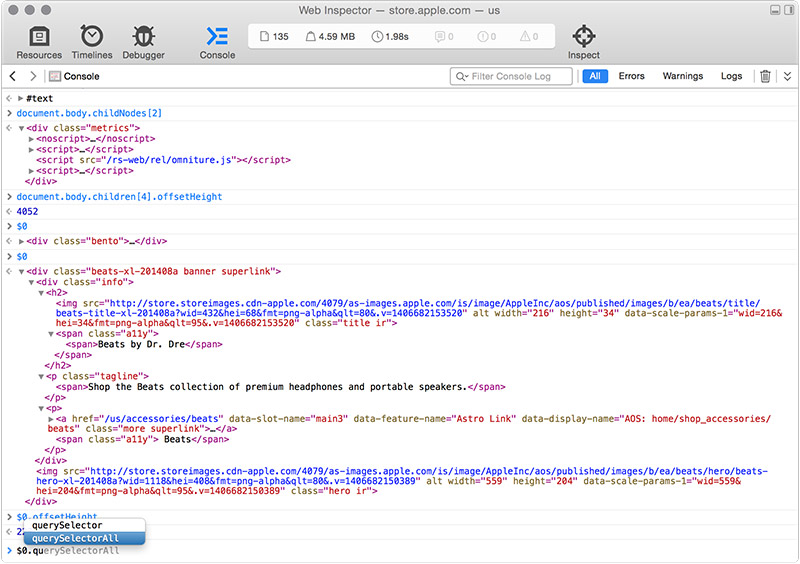
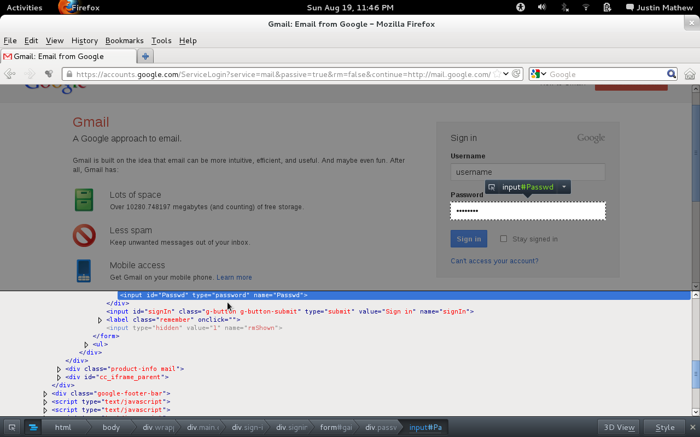
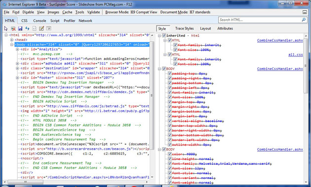
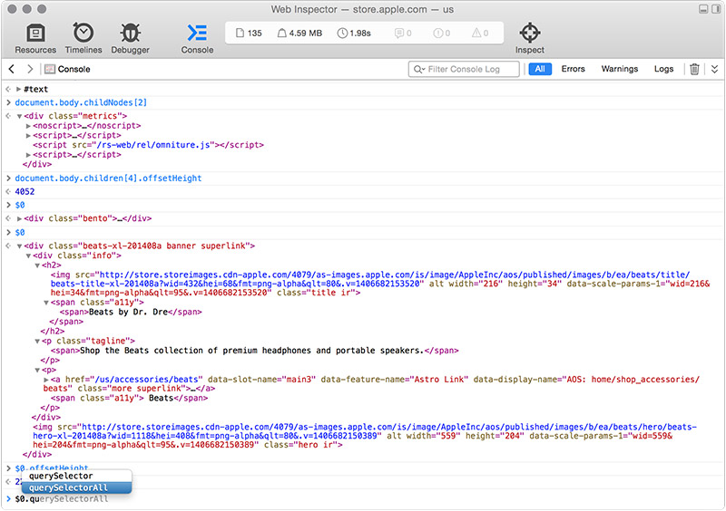
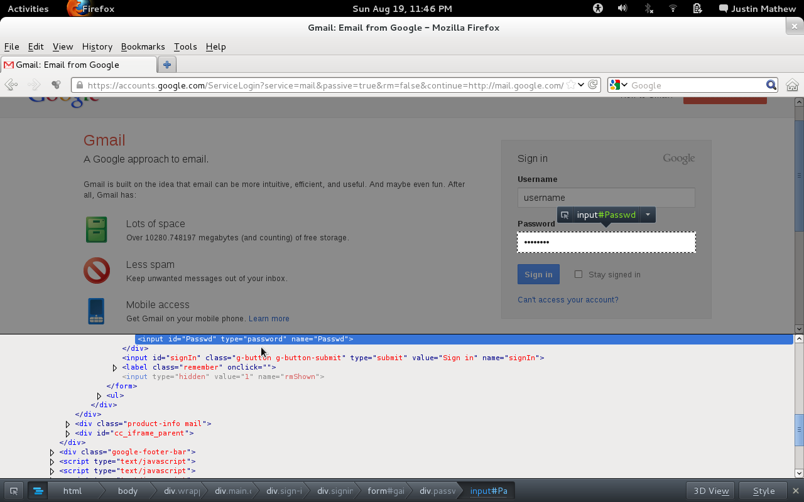
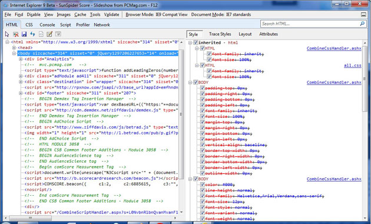

inspecione e edite páginas e estilos
debug mais fácil seu js
análise de performance
emulador de dispositivos
e muito mais...
chega de papo, hora de mostrar tudo isso!
by positioning, rotating and scaling them on an infinite canvas
the only limit is your imagination
want to know more?
use the source, Luke!
one more thing...
have you noticed it's in 3D*?
* beat that, prezi ;)